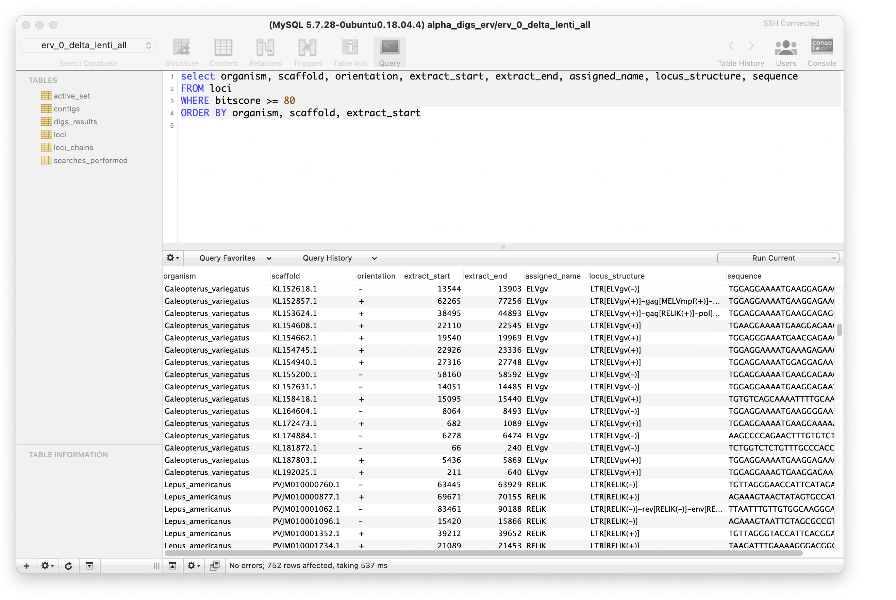

Explore uncharted genomic territory using BLAST and a relational database
The database-integrated genome-screening (DIGS) tool is a software framework for 'in silico' screening of molecular sequence databases .
Similarity search-based screening entails using sequence similarity search tools (e.g. BLAST) to screen genome and transcriptome data for sets of related sequences, usually with a view to reconstructing the evolutionary history of a particular genome feature (e.g. a gene, pseudogene or transposon) and thereby gaining insights into its biology.
The framework implemented in DIGS leverages the combined power of sequence similarity searches and structured query language (SQL) to enable comparative investigations of conserved genome features - including those that have not yet been recognised or annotated.

Database integrated genome screening: this screenshot shows querying of a DIGS project database via the SequelPro SQL client. The screening database shown here contains the results of a broad screen across mammalian species to identify rare 'endogenous lentivirus' sequences, such as 'rabbit endogenous lentivirus K' (RELIK). The panel on the left shows the screening database tables, reflecting the standard schema of a DIGS project database. The uppermost panel contains a database query, written in structured query language (SQL) - a standard language for storing, manipulating and retrieving data in databases. The main panel shows the subset of the database entries returned by the query. Note that SQL query uses a 'WHERE' clause to limit results based on their BLAST bitscore.
Requirements
Similarity searches: the DIGS tool uses the Basic Local Alignment Search Tool (BLAST) program suite to perform sequence similarity searches. BLAST is freely available to download and install via it's NCBI web page.
Relational Database: the DIGS tool uses the MySQL relational database management system (RDBMS) to coordinate in silico screens and to capture their output. The 'community server' version of MySQL is freely available for use in education and research.
GUI Client for Relational Database (Optional): to interface with DIGS project databases via a graphical user interface (GUI), please install one of the many SQL client programs that are compatible with MySQL, most of which are free to use - e.g. SequelPro.
Instructions for installing and running the DIGS tool can be found on the DIGS tool wikiAuthor
Robert J. Gifford (robert.gifford@glasgow.ac.uk)
Contributors
Dan Blanco Melo
Mac Campbell
Tristan Dennis
Joseph Hughes
Spyros Lytras
Henan Zhu
License
This project is licensed under the GNU Affero General Public License v. 3.0.